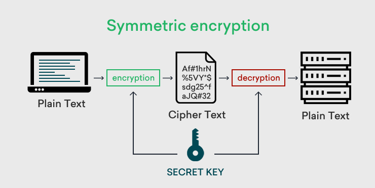

<!doctype html>
<html lang="en">
  <head>
    <meta charset="utf-8">

    <title>Fundamentals of Backend and Blockchain Development</title>

    <meta name="author" content="Dhruvin Parikh">

    <meta name="apple-mobile-web-app-capable" content="yes" />
    <meta name="apple-mobile-web-app-status-bar-style" content="black-translucent" />

    <meta name="viewport" content="width=device-width, initial-scale=1.0, maximum-scale=1.0, user-scalable=no, minimal-ui">

    <link rel="stylesheet" href="../../reveal.js/css/reveal.css">
    <link rel="stylesheet" href="../../reveal.js/css/theme/black.css" id="theme">

    <!-- Code syntax highlighting -->
    <link rel="stylesheet" href="../../reveal.js/lib/css/zenburn.css">

    <!-- Printing and PDF exports -->
    <script>
      var link = document.createElement( 'link' );
      link.rel = 'stylesheet';
      link.type = 'text/css';
      link.href = window.location.search.match( /print-pdf/gi ) ? '../../reveal.js/css/print/pdf.css' : '../../reveal.js/css/print/paper.css';
      document.getElementsByTagName( 'head' )[0].appendChild( link );
    </script>

    <!--[if lt IE 9]>
    <script src="../reveal.js/lib/js/html5shiv.js"></script>
    <![endif]-->

    <style>
      .reveal .slides h1, .reveal .slides h2, .reveal .slides h3 {
        text-transform: none;
      }

      .two-column {
        display: flex;
        flex-wrap: wrap;
      }

      .two-column em {
        margin: 20px;
      }

      .reveal .big-and-bold {
        font-weight: bold;
        font-size: 135%;
      }

      .reveal .shrunk-a-bit {
        font-size: 90%;
      }

      .reveal .shrunk-a-bit pre {
        width: 100%;
      }

      .reveal pre {
        width: 100%;
      }

      .reveal .highlight {
        color: yellow;
        font-weight: bold;
      }

      .reveal .highlightRed {
        color: red;
        font-weight: bold;
      }

      .left {
        left:-8.33%;
        text-align: left;
        float: left;
        width:50%;
        z-index:-10;
      }

      .right {
        left:31.25%;
        top: 75px;
        text-align: left;
        float: right;
        z-index:-10;
        width:50%;
      }
    </style>
  </head>

  <body>
    <div class="reveal">
      <div class="slides">

<!------------------------------------------------------->


<section data-markdown><script type="text/template">

## CSBC 1000 - Fundamentals of Backend and Blockchain Development

### Class 6: Cryptography and Security 

*Dhruvin Parikh*

</script></section>


<section data-markdown><script type="text/template">

## Class Plan
* Randomness
* Cryptograph in blockchain
* Hashing and transaction security
* Blockchain security

</script></section>

<section data-markdown><script type="text/template">

## Scope
* Cryptography techniques applied to blockchain and DLT technologies

</script></section>

<section data-markdown><script type="text/template">

  ## Randomness
  
  * Without randomness, all operations would be predictable, and therefore insecure
  * Cryptography (and blockchains) could not exist
  * Needed for generating secret keys, encryption protocols, and more
  
  </script></section>
  
  
  
  
  <section data-markdown><script type="text/template">
  
  *"Any one who considers arithmetical methods of producing random digits is, of course, in a state of sin. For, as has been pointed out several times, there is no such thing as a random number — there are only methods to produce random numbers, and a strict arithmetic procedure of course is not such a method."*
  
  —John von Neumann
  
  </script></section>
  
  
  
  
  <section data-markdown><script type="text/template">
  
  ## True random processes
  
  * Thermal noise
  * Radioactive decay
  * Network packet arrival times
  * Wiggling mouse/pounding on keyboard (?)
   
  </script></section>
  
  <section data-markdown><script type="text/template">
  
  ## Pseudo-randomness
  
  * PRNG (Pseudo-Random Number Generator)
    * Deterministic process that generates numbers
  * CSPRNG (Cryptographically Secure PRNG)
    * Must be unpredictable and unbiased
    * "Stretches" the randomness from a "seed" (small value from a true RNG)
  
  </script></section>
  
  <section data-markdown><script type="text/template">
  
  ## secure random number generator
  
  * Always use a randomness provided by your environment or OS
    * Web-browser: `window.crypto.getRandomValues()`
    * node.js: `crypto.randomBytes()`
    * Linux/OS X: `/dev/urandom`
    * Windows: `RtlGenRandom`
  
  </script></section>

  <section data-markdown><script type="text/template">

  ## Hashing
  * Hashing is the method of passing data into a one way hash-function to generate a string of unrecognizable text called a “hash”. 
  * It is computationally impossible to derive the original input of a hash-function given its output.
  * [hashing demo](https://andersbrownworth.com/blockchain/hash) 

</script></section>

<section data-markdown><script type="text/template">

  ## Application of Hashing
  * Data Integrity
  * Quick lookups
  * Store/verify password in database
  * Generate Blockchain address
  * Locating blockchain transactions
  * Compressing data    
</script></section>


  <section data-markdown><script type="text/template">

  ## Hashing in Blockchain
  * The role of hashes in the block structure is to preserve immutability. 
  * The transactions in the block are hashed together with the hash of the previous block. 
  * This hash is then included in the block header for a future block to use. 
  * The genesis block (i.e first block) will have only a hash of the initial transactions from the coinbase (first) account. 
</script></section>


<section data-markdown><script type="text/template">

  ## Hashing secures Blockchain
  
  * Even if one transaction changes in a block, the entire block hash would change. 
  * It would cause a break in the chain. 
  * In order to perform a successful rewrite of the blocks
    * Modify the current block and all the previous ones 
    * Convince the miners/validators on the network that this is valid. 
    * Do it before the next block is added. 
    * The longer the chain, the less likely it is that it can be broken.
</script></section>

<section data-markdown><script type="text/template">

  ## Collision-resistance
  
  * Hard to find any two messages that hash to the same value
  * Formally: Computationally infeasible to find distinct $m$ and $m'$ such that $H(m) = H(m')$
  
  </script></section>
  
  
  <section data-markdown><script type="text/template">
  
  ## Collision attacks
  
  * Hash functions are almost always attacked by finding collisions, not specific preimages
  * MD5 and SHA1 are insecure because it is easier than it should be to find collisions
    * Both are still practically secure against preimage attacks
  
  </script></section>

    <section data-markdown><script type="text/template">

## [Sidebar] Keccak/SHA3

* There are 2 separate hash functions: 
* keccak256
* SHA3 (standardised)
* Confusingly, Ethereum folks sometimes say "SHA3", but they *always* mean keccak256
* So be careful when using libraries in various languages!

</script></section>

<section data-markdown><script type="text/template">

## Cryptography

* Way to hash and unhash the messages using a pass key 
* Types of cryptography
  * Symmetric key Cryptography
  * Asymmetric key Cryptography 

</script></section>

<section data-markdown><script type="text/template">

## Symmetric key Cryptography

* A sender encrypts a message with a key that has been shared with the receiver over a different channel. 
* The receiver decrypts the message using same key.
* When the sender wants to share another message to a new receiver, they need a new key. 
* This means that there could be as many keys as there are recipients and messages.
* Length of keys : 128 or 256 bits
* Requires sharing of secret key
* Algorithms : RC4, AES, DES, 3DES, etc.
</script></section>

<section data-markdown><script type="text/template">

## Symmetric key Cryptography

<div class="left" style="width:50%;">
  
</div>
<div class="right" style="width:35%;">
   Sender and receiver generates and uses fresh key every-time to encrypt and decrypt messages.
</div>

</script></section>

<section data-markdown><script type="text/template">

## Asymmetric key Cryptography

* Asymmetric Key Cryptography (or Public Key Cryptography) introduces the use of two keys - 
 * a public (verification) key 
 * a private (signing) key. 
* Every network participant has their own public-private key pair. 
* Their public keys are available and visible to everyone, including attackers.
* Length of keys : >=2048 bits
* Algorithms : RSA, ECDSA, Diffie-Hellman 

</script></section>

<section data-markdown><script type="text/template">

## Asymmetric key Cryptography

<div class="left" style="width:50%;">
  
</div>
<div class="right" style="width:35%;">
   A message signed using public key can be decrypted using private key and vice versa.   
</div>

</script></section>

  
<section data-markdown><script type="text/template">

## Public and private keys
  
* Use good randomness to choose a private key
  * Always keep your private key secret!
* Each private key has a corresponding public key
  * Your public key is your bitcoin/ethereum address

</script></section>

<section data-markdown><script type="text/template">

## Public keys and addresses

* secp256k public keys are 64 bytes
* Ethereum addresses are 20 bytes
* To compute an ethereum address from a public key:
  * Hash public key with keccak256 (giving 32 bytes)
  * Take *last* 20 bytes of hash
  * Encode as hexadecimal
  * Prefix with "0x"
  * Optional: Compute checksum

</script></section>

<section data-markdown><script type="text/template">

## secp256k private keys

* Randomly choose a 256-bit number
* Almost any number will work, except:
  * `0`
  * Numbers greater than <span style="font-size: 50%">`0xFFFFFFFFFFFFFFFFFFFFFFFFFFFFFFFEBAAEDCE6AF48A03BBFD25E8CD0364140`</span>
* If you pick a 256 bit number at random, chance it is a valid private key: <span style="font-size: 50%">`99.999999999999999999999999999999999999626%`</span>

</script></section>


<section data-markdown><script type="text/template">

## Why hash public keys?

* Smaller (20 bytes instead of 64)
* Can be recovered from signatures anyway (later lesson)
* Quantum computer resistance (sort of)

</script></section>

<section data-markdown><script type="text/template">

## How public/private keys work?

* [Public/Private key demo](https://andersbrownworth.com/blockchain/public-private-keys/keys)
* Demo for generating public private key pair using web3.js
* Comparisons between symmetric and asymmetric key cryptography

</script></section>

<section data-markdown><script type="text/template">

## Signatures

Digital signatures let you create messages such as

<i>"I, Alice, send 10 bitcoins to Bob"</i>

... and prove that this message was created by Alice, and not some attacker

</script></section>

<section data-markdown><script type="text/template">

## Digital signatures

* A hash after signing a message with a private key.
* A digital signature is use to ensure :
  * The message was sent from a known entity (authentication).
  * The sender cannot deny they sent the message (non-repudiation),
  * The message was not tampered with during its delivery (integrity).
* Digital signatures provide proof of identity or atleast proof of control of an identity and its data.
</script></section>

<section data-markdown><script type="text/template">

## Digital signatures

* Bitcoin.
 * Sender would use their private key to sign the transaction and get a message signature. 
 * This is sent to the miners who verify the message signature with the public key of the sender. 
 * If the verification fails then it means the sender of the transaction is not the one who signed it.
 * Signature proves that they are the owner of those bitcoins
</script></section>

<section data-markdown><script type="text/template">

*If someone tries to tamper with the transaction, the corresponding signature would fail. How are we able to ensure that there is a one-to-one mapping between transaction data and their signatures?*

</script></section>

<section data-markdown><script type="text/template">

## Types of signatures

* RSA
* Elliptic curves
* Hash-based
* Lattices

On blockchains, almost always **elliptic curves**

</script></section>
    
    
    
<section data-markdown><script type="text/template">

## secp256k

* This is the type of elliptic curve signature used by Bitcoin, Ethereum, others
* Private keys are 32 bytes
* Public keys are 64 bytes (more on this later)
* Signatures are 64 bytes

</script></section>


<section data-markdown><script type="text/template">

## How to sign blockchain transaction?

* [Sign blockchain transaction](https://andersbrownworth.com/blockchain/public-private-keys/transaction)
* Demo for signing a transaction using web3.js
* message signing/verifying tool : https://etherscan.io/verifiedSignatures
</script></section>

<section data-markdown><script type="text/template">

## Hash functions

* The core building block of blockchains
* Functions that take an unlimited-size input message $m$ and return a fixed size output $h$:

$h = H(m)$

</script></section>


<section data-markdown><script type="text/template">
## Secp256k1 curve


<br/>
* specific curve used with ECDSA to generate key pairs and signatures
* set of points on the curve using the equation<br/> *y<sup>2</sup> = x<sup>3</sup> + 7*
</script></section>

<section data-markdown><script type="text/template">
## ECDSA {r,s,v}
* Signature (65 byte long) is represented by: 
 * *r* : 32-byte x-coordinate of a point generated during the signing process
 * *s* : 32-byte value derived from the formula 
 ```
 s = k^-1 * (e + d*r) mod n
 ``` 
 where `e = hash(msg)` and *d* is the signer’s private key.
* and followed by :
 * *v* : 1-byte recovery value used to determine public key from value *r*
</script></section>

<section data-markdown><script type="text/template">

</script></section>

<section data-markdown><script type="text/template">

</script></section>

<section data-markdown><script type="text/template">

</script></section>

<section data-markdown><script type="text/template">

## Signature malleability

* ECDSA allow attackers to change the signature slightly without invalidating the signature itself.
* Can occur if smart contract doesn’t utilize ECDSA correctly and validates signatures improperly. 
* Allows malicious actors to modify signatures to bypass signature validity measures.
* Attacker still doesn't know signer's private key.
</script></section>

<section data-markdown><script type="text/template">
## Signature malleability demo(javascript)
```
const Web3 = require("web3");
const BN = require("bn.js");
const { assert } = require("chai");

const web3 = new Web3(Web3.givenProvider);

const N = new BN("0xfffffffffffffffffffffffffffffffebaaedce6af48a03bbfd25e8cd0364141".substr(2), 16);


function Main(){
    // let's generate a new account
    let acc = web3.eth.accounts.create();
    console.log(`Original Signer Address : ${acc.address}`);

    // hash the message and sign the result
    const msgHash = web3.utils.soliditySha3("hello");
    //sign the hashed message
    let sig = acc.sign(msgHash);

    // lets make sure the recovered address is equal to the original signer
    assert(acc.address == web3.eth.accounts.recover(msgHash, sig.signature), "Something is wrong w the signature");

    // convert the signature S and V properties to a bigNumber, so we can manipulate them
    let S = new BN(sig.s.substr(2), 16)
    let newV = new BN(sig.v.substr(2), 16).mod(new BN('2')) == 0 ? new BN('1b', 16) : new BN('1c', 16);


    let newSig = sig.r + 
        N.sub(S).toString(16) + // manipulate S
        newV.toString(16);

    let recoveredSignerFromNewSignature = web3.eth.accounts.recover(msgHash, newSig);
    console.log(`Recovered Signer Address : ${acc.address}`);

    assert(recoveredSignerFromNewSignature == acc.address, "Signers are not equal");
    console.log("Signature works!!!")
}

Main()
```
</script></section>
      
<section data-markdown><script type="text/template">
## Signature malleability output (javascript)

```
// randomly generated account
Original Signer Address : 0xeF69029195d59655E982c26E654b34eEbc6075cA 

// should be equal to the above message
Recovered Signer Address : 0xeF69029195d59655E982c26E654b34eEbc6075cA
Signature works!!!
```
</script></section>

<section data-markdown><script type="text/template">
## Signature Verification Contract (solidity)
```
// SPDX-License-Identifier: MIT
pragma solidity ^0.8.0;

contract SignatureMalleability{

    function verify(bytes32 _messageHash, bytes memory _sig, address _expectedSigner) 
    public pure returns (bool) {
        bytes32 ethSignedHash = keccak256(
            abi.encodePacked("\x19Ethereum Signed Message:\n32", _messageHash)
        );
        address signer = recoverSigner(ethSignedHash, _sig);
        return signer == _expectedSigner;
    }

    function recoverSigner(bytes32 _ethSignedHash, bytes memory _sig) 
    public pure returns (address) {
        require(_sig.length == 65, "Invalid signature length");
        bytes32 r;
        bytes32 s;
        uint8 v;
        assembly {
            r := mload(add(_sig, 32))
            s := mload(add(_sig, 64))
            v := byte(0, mload(add(_sig, 96)))
        }
        if (v < 27) {
            v += 27;
        }
        require(v == 27 || v == 28, "Invalid signature v value");
        return ecrecover(_ethSignedHash, v, r, s);
    }

}
```
</script></section>

<section data-markdown><script type="text/template">
## Signature attacker contract (solidity)
```
// SPDX-License-Identifier: MIT
pragma solidity ^0.8.0;

contract Attack{

    function manipulateSignature(bytes memory signature) public pure returns(bytes memory) {
        (uint8 v, bytes32 r, bytes32 s) = splitSignature(signature);

        uint8 manipulatedV = v % 2 == 0 ? v - 1 : v + 1;
        uint256 manipulatedS = modNegS(uint256(s));
        bytes memory manipulatedSignature = abi.encodePacked(r, bytes32(manipulatedS), manipulatedV);

        return manipulatedSignature;
    }

    function splitSignature(bytes memory sig) public pure returns (uint8 v, bytes32 r, bytes32 s) {
        require(sig.length == 65, "Invalid signature length");
        assembly {
            r := mload(add(sig, 32))
            s := mload(add(sig, 64))
            v := byte(0, mload(add(sig, 96)))
        }
        if (v < 27) {
            v += 27;
        }
        require(v == 27 || v == 28, "Invalid signature v value");
    }

    function modNegS(uint256 s) public pure returns (uint256) {
  
        uint256 n = 0xfffffffffffffffffffffffffffffffebaaedce6af48a03bbfd25e8cd0364141;        
        return n - s;
    }

}
```
</script></section>

<section data-markdown><script type="text/template">
  
## Multi-Signatures

* When several people agree on something, they can all sign same message


</script></section>
  
  
  
  
  <section data-markdown><script type="text/template">
  
## Schnorr Multi-Signatures

* Schnorr signatures let you combine these into a single signature, that can still be verified


</script></section>
  
  
  
  
  <section data-markdown><script type="text/template">
  
  ## What about encryption?
  
  * Encryption is not used much in blockchains
  * Generally assumed that all information published is publicly visible
  
  </script></section>


<section data-markdown><script type="text/template">

## Causes of security issues in Blockchain

* Exposing private keys
* Poor storage solutions for keys
* Relinquishing control of keys to centralized parties
* Erroneously creating immature algorithms
* Poor infrastructure security
* Bugs in a smart contract
* 51% attacks
* Replay attacks and double spending

</script></section>

<section data-markdown><script type="text/template">

## Replay attacks and double spending

* Risk with cryptocurrencies where the same cash can be spent twice.
* Network attacks where valid data is intercepted in transit, by the originator or an adversary, and then repeated. 
* The goal is to fool the recipient that the attacker is not malicious since they hold valid data.

</script></section>

<section data-markdown><script type="text/template">

## Securing Bitcoin against double spending

* only unspent transaction outputs (UTXOs) behave as coins
* rule is that every unspent output can be spent only once
* A transaction which tries to spent same UTXO will be considered as double spending. 
* Old transactions can not be replayed, because the output is already spent.

</script></section>

<section data-markdown><script type="text/template">

## Securing Ethereum against double spending

* Ethereum has account based model
* Every account has a nonce (number only used once)
* If there are two transactions referring to the same account with the same nonce, then the first will be executed and the second one will be recognized as a double spend

</script></section>

<section data-markdown><script type="text/template">

## Exercise: Vanity Address

[vanity-address.html](vanity-address.html)

</script></section>


<section data-markdown><script type="text/template">

  ## Assessments : Crypto and Security Quiz Quiz

</script></section>

<section data-markdown><script type="text/template">

## References
* [Public/Private keys and Signing](https://youtu.be/xIDL_akeras)
* [Blockchain Visual demo](https://youtu.be/_160oMzblY8)
* [Replay attacks and double spending](http://danielszego.blogspot.com/2018/11/double-spending-and-replay-attacks-in.html)
* [Signature malleability in ECDSA](https://medium.com/draftkings-engineering/signature-malleability-7a804429b14a)
</script></section>

<section data-markdown><script type="text/template">

## End of Class

</script></section>


<!------------------------------------------------------->


      </div>

    </div>

    <script src="../../reveal.js/lib/js/head.min.js"></script>
    <script src="../../reveal.js/js/reveal.js"></script>
    <script src="../../reveal.js/plugin/zoom-js/zoom.js"></script>

    <script>

      // Full list of configuration options available at:
      // https://github.com/hakimel/reveal.js#configuration
      Reveal.initialize({
        controls: true,
        progress: true,
        history: true,
        center: true,

        transition: 'none', // none/fade/slide/convex/concave/zoom

	     math: {
          mathjax: '../../lib/MathJax/MathJax.js',
          config: 'TeX-AMS_SVG-full',
	     },

        // Optional reveal.js plugins
        dependencies: [
          { src: '../../reveal.js/plugin/markdown/marked.js', condition: function() { return !!document.querySelector( '[data-markdown]' ); } },
          { src: '../../reveal.js/plugin/markdown/markdown.js', condition: function() { return !!document.querySelector( '[data-markdown]' ); } },
          { src: '../../reveal.js/plugin/highlight/highlight.js', async: true, callback: function() { hljs.initHighlightingOnLoad(); } },
          { src: '../../reveal.js/plugin/math/math.js', async: true }
        ]
      });

    </script>

  </body>
</html>